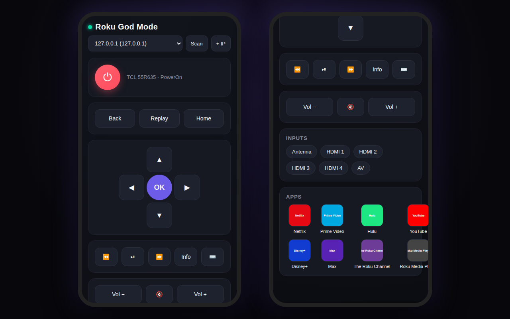

local network · remote control
The whole remote in a browser — every button, every input, every channel, and a real keyboard for search boxes — talking straight to the TV. No Roku account, no cloud, no app store.
running — self-hosted on the home network
why this exists
Every Roku runs a small web server on port 8060 — the External Control Protocol — that accepts button presses from anything on the same network, no pairing and no PIN. The official app wraps it in an account and a store listing. Roku God Mode just talks to it directly.
A browser can't open the raw UDP socket SSDP discovery needs, and a TV doesn't send the headers a web page would need to talk to it cross-origin. So a tiny Node server sits on the same network and relays: the page talks to the server, the server talks to the TV, and nothing leaves the house. It checks every device address is a plain IPv4 address before it will reach for it.
Power off works everywhere. Power on only works on Roku TVs with Fast TV Start enabled — a streaming stick that's fully off has no way to wake itself over the network. The server has no login: it is meant for a home network, and anyone on that network could use it, the same as they could the TV's own protocol. Tested against a stand-in Roku that answers the same protocol; the real proof is the living-room TV.